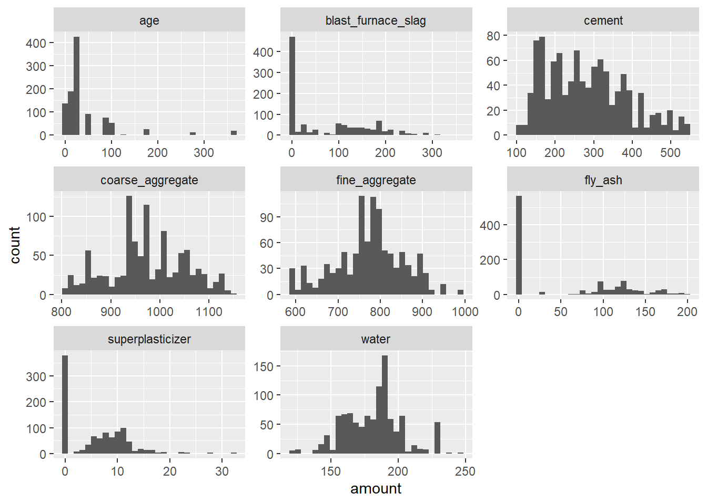
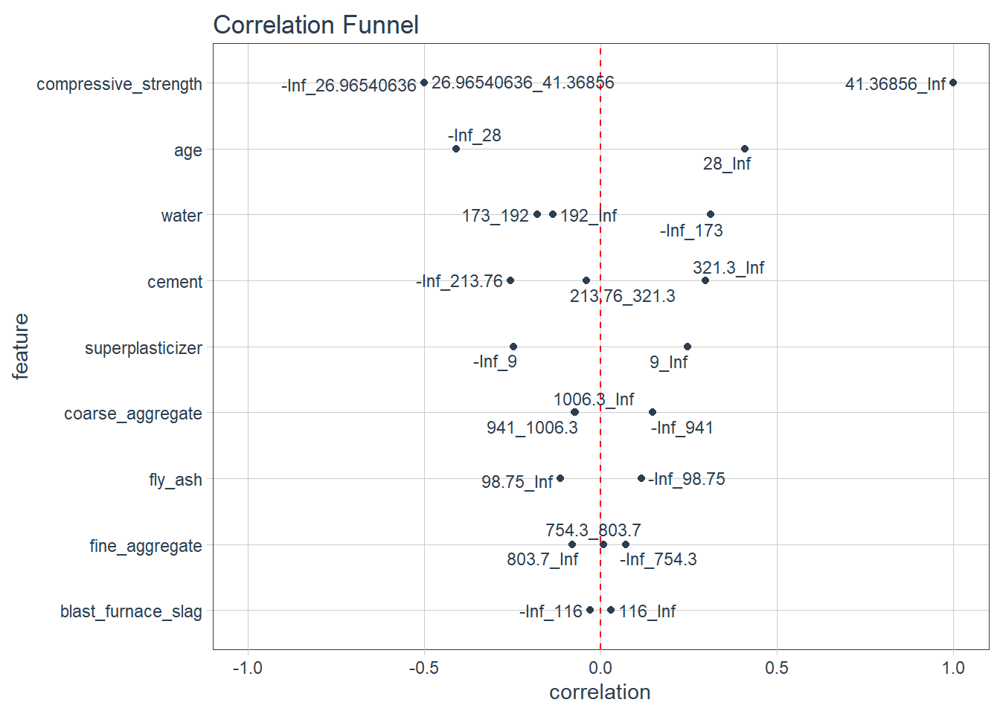

Exploratory Analysis of the Concrete Compressive Strength Dataset
Posted on March 17, 2020
The previous post focused on building a model for predicting the compressive strength of concrete using a conventional material modeling process. The models were built using the age of the concrete before testing and the water-to-cement or water-to-binder ratio. In this post, we look more broadly at all of the variables in the concrete dataset using exploratory analysis techniques.
First, let’s take another look at the dataset using the skimr package.
filename <- "Concrete_Data.xls"
folder <- "./data/"
numberCols <- 9 #total number of columns in spreadsheet
colTypes <- rep("numeric", numberCols)
concrete_tbl <- read_excel(path = paste0(folder, filename), col_types = colTypes)
concrete_tbl <- concrete_tbl %>%
rename(cement = starts_with("Cement")) %>%
rename(blast_furnace_slag = starts_with("Blast")) %>%
rename(fly_ash = starts_with("Fly Ash")) %>%
rename(water = starts_with("Water")) %>%
rename(superplasticizer = starts_with("Super")) %>%
rename(coarse_aggregate = starts_with("Coarse")) %>%
rename(fine_aggregate = starts_with("Fine")) %>%
rename(age = starts_with("Age")) %>%
rename(compressive_strength = starts_with("Concrete"))
skim(concrete_tbl)
Data summary
| Name |
concrete_tbl |
| Number of rows |
1030 |
| Number of columns |
9 |
| _______________________ |
|
| Column type frequency: |
|
| numeric |
9 |
| ________________________ |
|
| Group variables |
None |
Variable type: numeric
| cement |
0 |
1 |
281.17 |
104.51 |
102.00 |
192.38 |
272.90 |
350.00 |
540.0 |
▆▇▇▃▂ |
| blast_furnace_slag |
0 |
1 |
73.90 |
86.28 |
0.00 |
0.00 |
22.00 |
142.95 |
359.4 |
▇▂▃▁▁ |
| fly_ash |
0 |
1 |
54.19 |
64.00 |
0.00 |
0.00 |
0.00 |
118.27 |
200.1 |
▇▁▂▂▁ |
| water |
0 |
1 |
181.57 |
21.36 |
121.75 |
164.90 |
185.00 |
192.00 |
247.0 |
▁▅▇▂▁ |
| superplasticizer |
0 |
1 |
6.20 |
5.97 |
0.00 |
0.00 |
6.35 |
10.16 |
32.2 |
▇▆▁▁▁ |
| coarse_aggregate |
0 |
1 |
972.92 |
77.75 |
801.00 |
932.00 |
968.00 |
1029.40 |
1145.0 |
▃▅▇▅▂ |
| fine_aggregate |
0 |
1 |
773.58 |
80.18 |
594.00 |
730.95 |
779.51 |
824.00 |
992.6 |
▂▃▇▃▁ |
| age |
0 |
1 |
45.66 |
63.17 |
1.00 |
7.00 |
28.00 |
56.00 |
365.0 |
▇▁▁▁▁ |
| compressive_strength |
0 |
1 |
35.82 |
16.71 |
2.33 |
23.71 |
34.44 |
46.14 |
82.6 |
▅▇▇▃▁ |
The good news is that there were no missing data points in the concrete dataset. There are concrete compositions with no blast furnace slag, fly ash or superplasticizer. The age before testing is skewed to lower age before testing. These observations are further supported looking at the histograms shown below.
concrete_tbl %>%
pivot_longer(cement:age, names_to="ingredient", values_to = "amount") %>%
ggplot(aes(x=amount)) +
geom_histogram(bins = 30) +
facet_wrap(~ingredient, scales = "free")

Variable correlations
Next, we analyze the correlations between variables. When the amount of one ingredient is increased, we expect one or more of the other ingredients in the concrete mixture to decrease. So, some correlation between the concrete ingredients is expected.
ggcorr(concrete_tbl)

The correlation analysis showed a strong, positive correlation with cement content and compressive strength and less strong correlations with age with compressive strength and superplasticizer with compressive strength. An inverse correlation between water and superplasticizer was detected perhaps due to the water content of the superplasticizer requiring less additional water in the formulation.
Another way of visualizing the correlation of variables with the property you wish to predict is the called a “correlation funnel”.
concrete_tbl %>%
binarize(n_bins = 3) %>%
correlate(`compressive_strength__41.36856_Inf`) %>%
plot_correlation_funnel(interactive = FALSE)

The correlation funnel shows some degree of correlation between the cement, water, superplasticizer and age with compressive strength. The fly ash, coarse and fine aggregate and blast furnace slag showed very little correlation with compressive strength.
This article has shown several techniques for exploring the concrete dataset. The next article will use a generalized linear modeling approach to predict concrete compressive strength and compare the results with the conventional material modeling approach. Subsequent articles will use machine learning techniques such as artificial neural networks and extreme gradient boosting.
LS0tDQpvdXRwdXQ6IA0KICBodG1sX2RvY3VtZW50Og0KICAgIGNvZGVfZG93bmxvYWQ6IHRydWUNCiAgICBpbmNsdWRlczoNCiAgICAgIGFmdGVyX2JvZHk6IGZvb3Rlci5odG1sDQotLS0NCjxicj4NCmBgYHtyIHNldHVwLCBpbmNsdWRlPUZBTFNFfQ0Ka25pdHI6Om9wdHNfY2h1bmskc2V0KGVjaG8gPSBUUlVFKQ0KYGBgDQoNCmBgYHtyLCBpbmNsdWRlPUZBTFNFfQ0KbGlicmFyeShrbml0cikNCmxpYnJhcnkocmVhZHhsKQ0KbGlicmFyeSh0aWR5dmVyc2UpDQoNCiNFREENCmxpYnJhcnkoc2tpbXIpDQpsaWJyYXJ5KEdHYWxseSkNCmxpYnJhcnkoY29ycmVsYXRpb25mdW5uZWwpDQpgYGANCg0KIyMgKipFeHBsb3JhdG9yeSBBbmFseXNpcyBvZiB0aGUgQ29uY3JldGUgQ29tcHJlc3NpdmUgU3RyZW5ndGggRGF0YXNldCoqDQoqUG9zdGVkIG9uIE1hcmNoIDE3LCAyMDIwKg0KDQpUaGUgcHJldmlvdXMgcG9zdCBmb2N1c2VkIG9uIGJ1aWxkaW5nIGEgbW9kZWwgZm9yIHByZWRpY3RpbmcgdGhlIGNvbXByZXNzaXZlIHN0cmVuZ3RoIG9mIGNvbmNyZXRlIHVzaW5nIGEgY29udmVudGlvbmFsIG1hdGVyaWFsIG1vZGVsaW5nIHByb2Nlc3MuICBUaGUgbW9kZWxzIHdlcmUgYnVpbHQgdXNpbmcgdGhlIGFnZSBvZiB0aGUgY29uY3JldGUgYmVmb3JlIHRlc3RpbmcgYW5kIHRoZSB3YXRlci10by1jZW1lbnQgb3Igd2F0ZXItdG8tYmluZGVyIHJhdGlvLiAgSW4gdGhpcyBwb3N0LCB3ZSBsb29rIG1vcmUgYnJvYWRseSBhdCBhbGwgb2YgdGhlIHZhcmlhYmxlcyBpbiB0aGUgY29uY3JldGUgZGF0YXNldCB1c2luZyBleHBsb3JhdG9yeSBhbmFseXNpcyB0ZWNobmlxdWVzLg0KDQpGaXJzdCwgbGV0J3MgdGFrZSBhbm90aGVyIGxvb2sgYXQgdGhlIGRhdGFzZXQgdXNpbmcgdGhlIHNraW1yIHBhY2thZ2UuDQpgYGB7cn0NCmZpbGVuYW1lIDwtICJDb25jcmV0ZV9EYXRhLnhscyINCg0KZm9sZGVyIDwtICIuL2RhdGEvIg0KbnVtYmVyQ29scyA8LSA5ICN0b3RhbCBudW1iZXIgb2YgY29sdW1ucyBpbiBzcHJlYWRzaGVldA0KDQpjb2xUeXBlcyA8LSByZXAoIm51bWVyaWMiLCBudW1iZXJDb2xzKQ0KY29uY3JldGVfdGJsIDwtIHJlYWRfZXhjZWwocGF0aCA9IHBhc3RlMChmb2xkZXIsIGZpbGVuYW1lKSwgY29sX3R5cGVzID0gY29sVHlwZXMpDQoNCmNvbmNyZXRlX3RibCA8LSBjb25jcmV0ZV90YmwgJT4lDQogIHJlbmFtZShjZW1lbnQgPSBzdGFydHNfd2l0aCgiQ2VtZW50IikpICU+JQ0KICByZW5hbWUoYmxhc3RfZnVybmFjZV9zbGFnID0gc3RhcnRzX3dpdGgoIkJsYXN0IikpICU+JQ0KICByZW5hbWUoZmx5X2FzaCA9IHN0YXJ0c193aXRoKCJGbHkgQXNoIikpICU+JQ0KICByZW5hbWUod2F0ZXIgPSBzdGFydHNfd2l0aCgiV2F0ZXIiKSkgJT4lDQogIHJlbmFtZShzdXBlcnBsYXN0aWNpemVyID0gc3RhcnRzX3dpdGgoIlN1cGVyIikpICU+JQ0KICByZW5hbWUoY29hcnNlX2FnZ3JlZ2F0ZSA9IHN0YXJ0c193aXRoKCJDb2Fyc2UiKSkgJT4lDQogIHJlbmFtZShmaW5lX2FnZ3JlZ2F0ZSA9IHN0YXJ0c193aXRoKCJGaW5lIikpICU+JQ0KICByZW5hbWUoYWdlID0gc3RhcnRzX3dpdGgoIkFnZSIpKSAlPiUNCiAgcmVuYW1lKGNvbXByZXNzaXZlX3N0cmVuZ3RoID0gc3RhcnRzX3dpdGgoIkNvbmNyZXRlIikpDQoNCnNraW0oY29uY3JldGVfdGJsKQ0KYGBgDQoNClRoZSBnb29kIG5ld3MgaXMgdGhhdCB0aGVyZSB3ZXJlIG5vIG1pc3NpbmcgZGF0YSBwb2ludHMgaW4gdGhlIGNvbmNyZXRlIGRhdGFzZXQuICBUaGVyZSBhcmUgY29uY3JldGUgY29tcG9zaXRpb25zIHdpdGggbm8gYmxhc3QgZnVybmFjZSBzbGFnLCBmbHkgYXNoIG9yIHN1cGVycGxhc3RpY2l6ZXIuICBUaGUgYWdlIGJlZm9yZSB0ZXN0aW5nIGlzIHNrZXdlZCB0byBsb3dlciBhZ2UgYmVmb3JlIHRlc3RpbmcuICBUaGVzZSBvYnNlcnZhdGlvbnMgYXJlIGZ1cnRoZXIgc3VwcG9ydGVkIGxvb2tpbmcgYXQgdGhlIGhpc3RvZ3JhbXMgc2hvd24gYmVsb3cuICANCg0KYGBge3J9DQpjb25jcmV0ZV90YmwgJT4lDQogIHBpdm90X2xvbmdlcihjZW1lbnQ6YWdlLCBuYW1lc190bz0iaW5ncmVkaWVudCIsIHZhbHVlc190byA9ICJhbW91bnQiKSAlPiUNCiAgZ2dwbG90KGFlcyh4PWFtb3VudCkpICsNCiAgZ2VvbV9oaXN0b2dyYW0oYmlucyA9IDMwKSArDQogIGZhY2V0X3dyYXAofmluZ3JlZGllbnQsIHNjYWxlcyA9ICJmcmVlIikNCmBgYA0KDQojIyMgVmFyaWFibGUgY29ycmVsYXRpb25zDQoNCk5leHQsIHdlIGFuYWx5emUgdGhlIGNvcnJlbGF0aW9ucyBiZXR3ZWVuIHZhcmlhYmxlcy4gIFdoZW4gdGhlIGFtb3VudCBvZiBvbmUgaW5ncmVkaWVudCBpcyBpbmNyZWFzZWQsIHdlIGV4cGVjdCBvbmUgb3IgbW9yZSBvZiB0aGUgb3RoZXIgaW5ncmVkaWVudHMgaW4gdGhlIGNvbmNyZXRlIG1peHR1cmUgdG8gZGVjcmVhc2UuICBTbywgc29tZSBjb3JyZWxhdGlvbiBiZXR3ZWVuIHRoZSBjb25jcmV0ZSBpbmdyZWRpZW50cyBpcyBleHBlY3RlZC4NCg0KYGBge3J9DQpnZ2NvcnIoY29uY3JldGVfdGJsKQ0KYGBgDQoNClRoZSBjb3JyZWxhdGlvbiBhbmFseXNpcyBzaG93ZWQgYSBzdHJvbmcsIHBvc2l0aXZlIGNvcnJlbGF0aW9uIHdpdGggY2VtZW50IGNvbnRlbnQgYW5kIGNvbXByZXNzaXZlIHN0cmVuZ3RoIGFuZCBsZXNzIHN0cm9uZyBjb3JyZWxhdGlvbnMgd2l0aCBhZ2Ugd2l0aCBjb21wcmVzc2l2ZSBzdHJlbmd0aCBhbmQgc3VwZXJwbGFzdGljaXplciB3aXRoIGNvbXByZXNzaXZlIHN0cmVuZ3RoLiAgQW4gaW52ZXJzZSBjb3JyZWxhdGlvbiBiZXR3ZWVuIHdhdGVyIGFuZCBzdXBlcnBsYXN0aWNpemVyIHdhcyBkZXRlY3RlZCBwZXJoYXBzIGR1ZSB0byB0aGUgd2F0ZXIgY29udGVudCBvZiB0aGUgc3VwZXJwbGFzdGljaXplciByZXF1aXJpbmcgbGVzcyBhZGRpdGlvbmFsIHdhdGVyIGluIHRoZSBmb3JtdWxhdGlvbi4NCg0KQW5vdGhlciB3YXkgb2YgdmlzdWFsaXppbmcgdGhlIGNvcnJlbGF0aW9uIG9mIHZhcmlhYmxlcyB3aXRoIHRoZSBwcm9wZXJ0eSB5b3Ugd2lzaCB0byBwcmVkaWN0IGlzIHRoZSBjYWxsZWQgYSAiY29ycmVsYXRpb24gZnVubmVsIi4NCg0KYGBge3J9DQpjb25jcmV0ZV90YmwgJT4lDQogIGJpbmFyaXplKG5fYmlucyA9IDMpICU+JQ0KICBjb3JyZWxhdGUoYGNvbXByZXNzaXZlX3N0cmVuZ3RoX180MS4zNjg1Nl9JbmZgKSAlPiUNCiAgcGxvdF9jb3JyZWxhdGlvbl9mdW5uZWwoaW50ZXJhY3RpdmUgPSBGQUxTRSkNCmBgYA0KDQpUaGUgY29ycmVsYXRpb24gZnVubmVsIHNob3dzIHNvbWUgZGVncmVlIG9mIGNvcnJlbGF0aW9uIGJldHdlZW4gdGhlIGNlbWVudCwgd2F0ZXIsIHN1cGVycGxhc3RpY2l6ZXIgYW5kIGFnZSB3aXRoIGNvbXByZXNzaXZlIHN0cmVuZ3RoLiAgVGhlIGZseSBhc2gsIGNvYXJzZSBhbmQgZmluZSBhZ2dyZWdhdGUgYW5kIGJsYXN0IGZ1cm5hY2Ugc2xhZyBzaG93ZWQgdmVyeSBsaXR0bGUgY29ycmVsYXRpb24gd2l0aCBjb21wcmVzc2l2ZSBzdHJlbmd0aC4NCg0KVGhpcyBhcnRpY2xlIGhhcyBzaG93biBzZXZlcmFsIHRlY2huaXF1ZXMgZm9yIGV4cGxvcmluZyB0aGUgY29uY3JldGUgZGF0YXNldC4gIFRoZSBuZXh0IGFydGljbGUgd2lsbCB1c2UgYSBnZW5lcmFsaXplZCBsaW5lYXIgbW9kZWxpbmcgYXBwcm9hY2ggdG8gcHJlZGljdCBjb25jcmV0ZSBjb21wcmVzc2l2ZSBzdHJlbmd0aCBhbmQgY29tcGFyZSB0aGUgcmVzdWx0cyB3aXRoIHRoZSBjb252ZW50aW9uYWwgbWF0ZXJpYWwgbW9kZWxpbmcgYXBwcm9hY2guICBTdWJzZXF1ZW50IGFydGljbGVzIHdpbGwgdXNlIG1hY2hpbmUgbGVhcm5pbmcgdGVjaG5pcXVlcyBzdWNoIGFzIGFydGlmaWNpYWwgbmV1cmFsIG5ldHdvcmtzIGFuZCBleHRyZW1lIGdyYWRpZW50IGJvb3N0aW5nLg0K